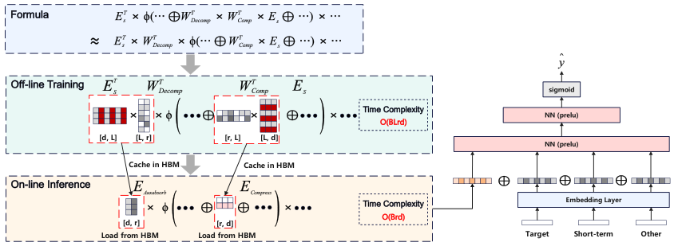

LREA: Low-Rank Efficient Attention on Modeling Long-Term User Behaviors for CTR Prediction (面向 CTR 预估的长行为序列低秩高效注意力)
- 会议/期刊: SIGIR 2025 (Short Paper Track)
- 作者与机构: Xin Song, Xiaochen Li, Jinxin Hu, Hong Wen, Zulong Chen, Yu Zhang, Xiaoyi Zeng, Jing Zhang（阿里巴巴国际数字商业集团、阿里巴巴集团、武汉大学）
- 推荐链路定位: 精排（长序列用户兴趣建模）
- 研究方向: CTR/CVR 预估与特征交叉 / 序列与会话推荐
- 论文原文: https://arxiv.org/abs/2503.02542v4
- 开源代码: 暂未开源
TL;DR (1分钟核心速览)
工业界长行为序列建模普遍靠 SIM/ETA/SDIM 等"先检索 Top-K 再注意力"的两阶段过滤，代价是丢弃弱相关但有用的行为（如买裤子时忽略浅色衣服购买所隐含的深色偏好）。LREA 提出在序列长度维度做低秩分解 \(E_s^T W_{Comp}W_{Decomp}\)，把\(L\)维序列压到秩\(r\)，再用矩阵吸收把\(W_{Decomp}\)提前并入缓存，使在线复杂度从\(O(BLd)\)降到\(O(Brd)\)；配合非负正则保证\(\phi(AB)=A\phi(B)\) 近似成立。在 Amazon/Taobao/工业数据集上 AUC 追平甚至超过不可部署的全序列 DIN，线上 A/B 12 天 CTR +5.88%、RPM +4.26%，延迟仅 +3ms。
Background & Motivation (背景与核心矛盾)
- 主流范式: 精排阶段用多目标注意力（MHTA）让候选物品作 Query、长行为序列作 Key/Value；为控延迟，工业界普遍采用两阶段过滤（SIM 的属性倒排 Top-K）或低精度注意力（ETA 哈希、SDIM 多轮哈希采样）。
- 前人局限: ① 过滤式方法按物品属性或哈希碰撞选 Top-K，会系统性丢弃"弱相关但语义互补"的行为，造成信息不可逆损失；② 全序列 DIN 精度最高但在线复杂度 \(O(BLd)\)，序列涨到万级时延迟不可容忍（实测平均 +30ms，15% 请求超时）。
- 核心洞察 (Key Insight): DeepSeek MLA 式的隐层压缩只省 KV Cache 显存、不减推理计算量，不适用于本场景；真正需要压缩的是序列长度维度本身，且压缩必须可被"吸收"进预计算缓存才能兑现线上收益。
- 本文切入点: 用低秩矩阵分解在长度维压缩序列，并设计使 \(W_{Decomp}\) 可被吸收的激活函数与配套非负损失，实现"全量行为 + 低延迟"兼得。
Method (核心方法设计)
1. 整体框架 (Overall Architecture)
离线训练阶段，LREA 在标准 DIN 目标注意力旁挂两个低秩矩阵 \(W_{Comp}\in\mathbb{R}^{L\times r}\)、\(W_{Decomp}\in\mathbb{R}^{r\times L}\)，与主任务联合更新，但不做任何计算图优化；训练收敛后将\(E_s^TW_{Decomp}^T\)（记为\(E_{Auxabsorb}\)）与\(E_s^TW_{Comp}\)（记为\(E_{Comp}\)）预先算好并缓存至 HBM。在线推理时不再加载原始万级序列，仅用两个\(r\)维压缩表征完成注意力打分，输出与其余特征拼接后过 MLP 出\(\hat{y}\)。
flowchart TD
A["长行为序列 Es (L×d) + 目标物品 Et"] --> B["低秩压缩: E_Comp = Es^T·W_Comp (d×r)"]
B --> C["LREA 注意力打分: φ[W_Decomp^T(EtW1 + E_Comp^T W2 + Et⊙E_Comp^T W3)]Wo"]
C --> D["矩阵吸收: E_Auxabsorb = Es^T·W_Decomp^T 预存 HBM"]
D --> E["拼接其他特征 → MLP → ŷ"]
2. 关键设计拆解 (Key Designs)
-
长度维低秩压缩（Low-Rank Sequence Compression）：针对"过滤丢信息"的痛点，把序列表征改写为 \(E_s^{LREA}=(E_s^TW_{Comp}W_{Decomp})^T\)，其中\(E_{Comp}=E_s^TW_{Comp}\in\mathbb{R}^{d\times r}\)是压缩序列。将 DIN 打分式中的\(E_s\)替换为\(E_s^{LREA}\)、\(E_s\odot E_t\)替换为\(W_{Decomp}^T(E_t\odot E_{Comp}^T)\)，得到 $\(\text{AttScore}_{LREA}=\phi\big[W_{Decomp}^T(E_tW_1+E_{Comp}^TW_2+E_t\odot E_{Comp}^TW_3)\big]W_o\)$ 直觉上，\(r\) 维子空间保留了全序列的线性组合信息，而非硬性截断，因此弱相关行为仍能以投影形式贡献梯度。
-
矩阵吸收与激活函数选择（Matrix Absorption）：若激活满足 \(\phi(AB)=A\phi(B)\)，则输出可写成\(E_s^TW_{Decomp}^T\cdot\phi(\cdot)W_o\)，\(W_{Decomp}\)被\(E_{Auxabsorb}=(E_s^TW_{Decomp}^T)_{d\times r}\)完全吸收，在线只需读两个\(d\times r\)缓存。严格解\(\phi(x)=kx\)会丧失非线性，故选用 Leaky ReLU 系列近似，但要求\(A\)、\(B\) 元素同号（尽量非负）才能近似成立——这引出下一条损失。
-
非负正则与训练目标：为让 \(\phi(AB)\approx A\phi(B)\) 成立，对负元素施加 Frobenius 惩罚： $\(\mathcal{L}_{non\text{-}neg}=\|\max(0,-W_{Decomp}^T)\|_F^2+\|\max(0,-W_{Comp}^TE_s)\|_F^2,\quad \mathcal{L}_{LREA}=\mathcal{L}_{CE}+\lambda\mathcal{L}_{non\text{-}neg}\)$ \(\lambda\)在"非线性表达力"与"可吸收性"之间权衡。训练沿用 CTR 常规交叉熵，无额外负采样设计；推理复杂度\(O(Brd)\)，相较 DIN 的\(O(BLd)\)在\(r\ll L\) 时降一个量级以上。
Experimental Setup & Evaluation Protocol (实验设置与评估协议)
- 数据集与预处理:
| 数据集 | #Users | #Items | #Interactions | 稀疏度/密度 | 特征/场景说明 |
|---|---|---|---|---|---|
| Amazon (Books) | 未披露 | 未披露 | 未披露 | — | 近 10 条短期 + 近 90 条长期行为，预处理沿用 SIM |
| Taobao | 未披露 | 未披露 | 89M 记录 | — | 前 64 条短期 + 其余 500 条点击作长期 |
| Industrial | 10M | 未披露 | 2B 记录 | — | 2024-12-03~12-23 广告曝光日志，近 64 条短期 + 10000 条长期 |
- 数据划分与防穿越 (Splitting Strategy): 原文未明确交代划分方式（短论文篇幅所限），工业集按时间窗（12/03–12/23）取日志，隐含时间切分；公开集沿用 SIM 的预处理流程。
- 排名评测协议 (Ranking Protocol): 采用 CTR 任务标准的 AUC 与 GAUC（按用户请求分组加权平均，权重为该用户样本数）；GAUC 仅在工业集报告（公开集分组数过少）。未涉及 Full-Ranking / Sampled Ranking 的召回式评测。
- 对比基线与超参设置: 基线含 DIN(W/o long seq.)、DIN(Long sequence)、SIM、ETA、SDIM、TWIN；隐层 [512,256,128]，Leaky ReLU + BatchNorm，Adagrad，学习率 {0.01, 0.005, 0.001}，batch 1024，embedding 维度 \(d=16\)，\(r=128\)，\(\lambda=0.3\)。
Key Experimental Results (实验关键数据)
1. 主实验对比 (Main Results)
| Models | Amazon AUC | Taobao AUC | Industrial AUC | Industrial GAUC |
|---|---|---|---|---|
| DIN (W/o long seq.) | 0.7833 | 0.8535 | 0.7005 | 0.6187 |
| SIM | 0.7919 | 0.8667 | 0.7031 | 0.6208 |
| ETA | 0.7984 | 0.8651 | 0.7083 | 0.6235 |
| SDIM | 0.8013 | 0.8734 | 0.7097 | 0.6239 |
| TWIN | 0.8015 | 0.8838 | 0.7103 | 0.6258 |
| DIN (Long sequence) | 0.8101 | 0.8903 | 0.7149 | 0.6337 |
| LREA | 0.8098 | 0.8904 | 0.7154 | 0.6343 |
| Improv. vs 最佳两阶段 | +1.04% | +0.75% | +0.72% | +1.36% |
2. 消融与超参分析 (Ablation & Hyper-parameter)
| 配置 | AUC | GAUC | 说明 |
|---|---|---|---|
| \(r=32\) | 0.7081 | 0.6222 | 秩过小，压缩损失显著 |
| \(r=64\) | 0.7097 | 0.6254 | 仍低于\(r=128\) |
| \(r=128\) | 0.7154 | 0.6343 | 最优秩 |
| \(\lambda=0.05\) | 0.7121 | 0.6298 | 非负约束过弱，吸收近似失效 |
| \(\lambda=0.1\) | 0.7138 | 0.6312 | 次优 |
| \(\lambda=0.3\) | 0.7154 | 0.6343 | 最优平衡点 |
| \(\lambda=0.5\) | 0.7137 | 0.6315 | 非线性被压制 |
| \(\lambda=0.8\) | 0.7129 | 0.6297 | 过度非负，退化近线性 |
3. 关键实验发现 (Key Findings)
- 全量行为 > 过滤行为：LREA 在三个数据集上均超过所有两阶段方法（Amazon +1.04%、Taobao +0.75%、工业 AUC +0.72%/GAUC +1.36%），且与不可部署的 DIN(Long sequence) 基本持平（工业集甚至 +0.05% AUC），证明低秩压缩几乎无损地替代了全序列注意力。
- 秩 \(r\)是性能-显存的主开关：\(r\)从 128 降到 32 时工业 AUC 掉 0.73 个点，说明万级序列无法压到极低秩；作者未测\(r>128\)，暗示存在缓存容量与精度的工程折中点。
- \(\lambda\)呈单峰效应：\(\lambda\) 从 0.05 增至 0.3 时 GAUC 提升 0.45 个点，超过 0.5 后回落，定量印证了"非负性 vs 非线性"的理论张力——约束太松则矩阵吸收不成立，太紧则注意力退化为线性。
- 线上收益与延迟双赢：12 天 A/B 相对 DIN+SIM 产品模型 CTR +5.88%、RPM +4.26%，推理延迟仅 +3ms；对照 DIN(Long sequence) 平均 +30ms 且 15% 请求超时，说明矩阵吸收的预存策略真正兑现了复杂度优势。
Highlights & Limitations (亮点、对比与审稿批判)
- 与代表作对比 (vs. Prior Work): 与 SIM/ETA/SDIM 的本质区别在于"不丢弃任何行为"，用可学习的低秩投影替代硬检索/哈希碰撞；与 TWIN 的 GPU 分层注意力相比，LREA 走的是代数压缩路线，在线只需读两个 \(d\times r\) 缓存而非重算分层注意力；与 DeepSeek MLA 相比，MLA 压缩隐层省显存但不减 FLOPs，LREA 压缩长度维直接降在线计算量。
- 可迁移亮点: ① "矩阵吸收 + 预存 HBM" 的推理范式可迁移到任何 Query 固定、Key/Value 为长序列的注意力场景（如多模态长视频序列、超长会话）；② 用正则项强制激活函数满足代数同态 \(\phi(AB)=A\phi(B)\) 的思路，可用于其他需要把线性变换提前折叠的网络模块。
- 审稿级局限批判: ① 公开数据集未给出用户/物品规模与划分细节，且 GAUC 缺失，复现与公平比较存疑；② 矩阵吸收依赖 Leaky ReLU 近似同态，理论上只在同号区间成立，非负约束与非线性表达力存在不可消除的张力，\(r\)与\(\lambda\) 需逐场景调参；③ 仅报告 AUC/GAUC，缺少校准性（calibration）与延迟-精度 Pareto 曲线的系统分析。
Rating (四维评分)
- 方法创新性 (Novelty): ⭐⭐⭐⭐ （长度维低秩分解 + 矩阵吸收 + 非负正则三者闭环，工程导向明确，理论深度中等但组合巧妙）
- 评估协议与实验扎实度 (Protocol & Experiments): ⭐⭐⭐ （三数据集 + 12 天线上 A/B 有说服力，但公开集划分与统计细节缺失、无显著性检验）
- 写作与数学规范度 (Clarity & Rigor): ⭐⭐⭐⭐ （公式推导链条清晰，复杂度对比表直观；短论文篇幅下部分符号与数据集统计略欠交代）
- 工业落地与复现价值 (Industrial & Practical Value): ⭐⭐⭐⭐⭐ （+3ms 延迟换 +5.88% CTR 的线上实证极稀缺，矩阵吸收方案可直接落地；可惜未开源）